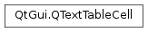

QTextTableCell¶
Synopsis¶
Functions¶
- def
__eq__(other) - def
__ne__(other) - def
begin() - def
column() - def
columnSpan() - def
end() - def
firstCursorPosition() - def
firstPosition() - def
format() - def
isValid() - def
lastCursorPosition() - def
lastPosition() - def
row() - def
rowSpan() - def
setFormat(format) - def
tableCellFormatIndex()
Detailed Description¶
The
PySide2.QtGui.QTextTableCellclass represents the properties of a cell in aPySide2.QtGui.QTextTable.Table cells are pieces of document structure that belong to a table. The table orders cells into particular rows and columns; cells can also span multiple columns and rows.
Cells are usually created when a table is inserted into a document with
QTextCursor.insertTable(), but they are also created and destroyed when a table is resized.Cells contain information about their location in a table; you can obtain the
PySide2.QtGui.QTextTableCell.row()andPySide2.QtGui.QTextTableCell.column()numbers of a cell, and itsPySide2.QtGui.QTextTableCell.rowSpan()andPySide2.QtGui.QTextTableCell.columnSpan().The
PySide2.QtGui.QTextTableCell.format()of a cell describes the default character format of its contents. ThePySide2.QtGui.QTextTableCell.firstCursorPosition()andPySide2.QtGui.QTextTableCell.lastCursorPosition()functions are used to obtain the extent of the cell in the document.
-
class
PySide2.QtGui.QTextTableCell¶ -
class
PySide2.QtGui.QTextTableCell(o) Parameters: o – PySide2.QtGui.QTextTableCellConstructs an invalid table cell.
Copy constructor. Creates a new
PySide2.QtGui.QTextTableCellobject based on theothercell.
-
PySide2.QtGui.QTextTableCell.begin()¶ Return type: PySide2.QtGui.QTextFrame::iteratorReturns a frame iterator pointing to the beginning of the table’s cell.
See also
-
PySide2.QtGui.QTextTableCell.column()¶ Return type: PySide2.QtCore.intReturns the number of the column in the table that contains this cell.
See also
-
PySide2.QtGui.QTextTableCell.columnSpan()¶ Return type: PySide2.QtCore.intReturns the number of columns this cell spans. The default is 1.
-
PySide2.QtGui.QTextTableCell.end()¶ Return type: PySide2.QtGui.QTextFrame::iteratorReturns a frame iterator pointing to the end of the table’s cell.
See also
-
PySide2.QtGui.QTextTableCell.firstCursorPosition()¶ Return type: PySide2.QtGui.QTextCursorReturns the first valid cursor position in this cell.
-
PySide2.QtGui.QTextTableCell.firstPosition()¶ Return type: PySide2.QtCore.intReturns the first valid position in the document occupied by this cell.
-
PySide2.QtGui.QTextTableCell.format()¶ Return type: PySide2.QtGui.QTextCharFormatReturns the cell’s character format.
-
PySide2.QtGui.QTextTableCell.isValid()¶ Return type: PySide2.QtCore.boolReturns
trueif this is a valid table cell; otherwise returns false.
-
PySide2.QtGui.QTextTableCell.lastCursorPosition()¶ Return type: PySide2.QtGui.QTextCursorReturns the last valid cursor position in this cell.
-
PySide2.QtGui.QTextTableCell.lastPosition()¶ Return type: PySide2.QtCore.intReturns the last valid position in the document occupied by this cell.
-
PySide2.QtGui.QTextTableCell.__ne__(other)¶ Parameters: other – PySide2.QtGui.QTextTableCellReturn type: PySide2.QtCore.boolReturns
trueif this cell object and theothercell object describe different cells; otherwise returnsfalse.
-
PySide2.QtGui.QTextTableCell.__eq__(other)¶ Parameters: other – PySide2.QtGui.QTextTableCellReturn type: PySide2.QtCore.boolReturns
trueif this cell object and theothercell object describe the same cell; otherwise returnsfalse.
-
PySide2.QtGui.QTextTableCell.row()¶ Return type: PySide2.QtCore.intReturns the number of the row in the table that contains this cell.
-
PySide2.QtGui.QTextTableCell.rowSpan()¶ Return type: PySide2.QtCore.intReturns the number of rows this cell spans. The default is 1.
-
PySide2.QtGui.QTextTableCell.setFormat(format)¶ Parameters: format – PySide2.QtGui.QTextCharFormatSets the cell’s character format to
format. This can for example be used to change the background color of the entire cell:PySide2.QtGui.QTextTableCellcell = table->cellAt(2, 3);PySide2.QtGui.QTextCharFormatformat = cell.PySide2.QtGui.QTextTableCell.format(); format.setBackground(Qt.blue); cell.(format);Note that the cell’s row or column span cannot be changed through this function. You have to use
QTextTable.mergeCellsandQTextTable.splitCellinstead.
-
PySide2.QtGui.QTextTableCell.tableCellFormatIndex()¶ Return type: PySide2.QtCore.intReturns the index of the tableCell’s format in the document’s internal list of formats.
See also
© 2018 The Qt Company Ltd. Documentation contributions included herein are the copyrights of their respective owners. The documentation provided herein is licensed under the terms of the GNU Free Documentation License version 1.3 as published by the Free Software Foundation. Qt and respective logos are trademarks of The Qt Company Ltd. in Finland and/or other countries worldwide. All other trademarks are property of their respective owners.